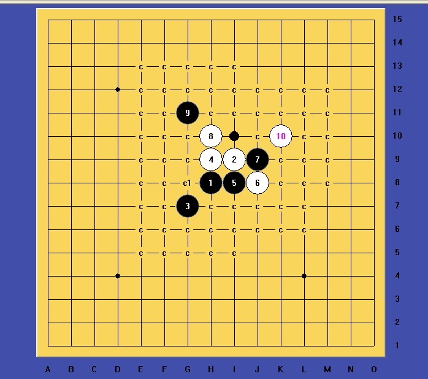
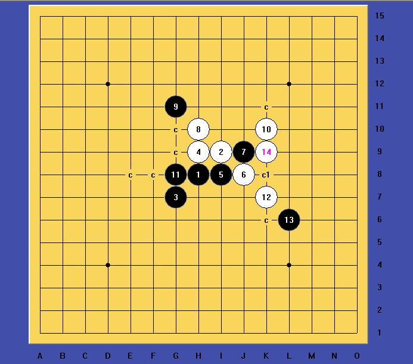
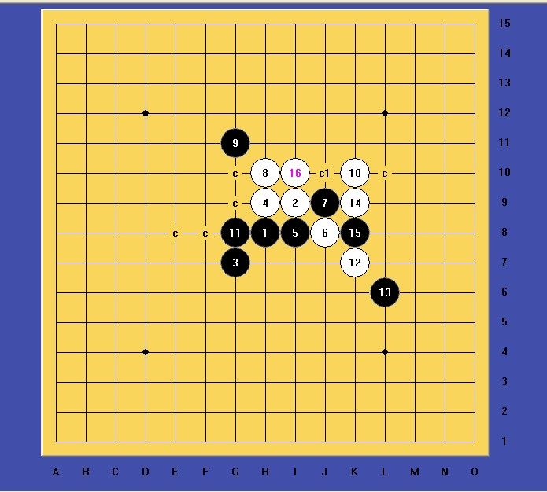
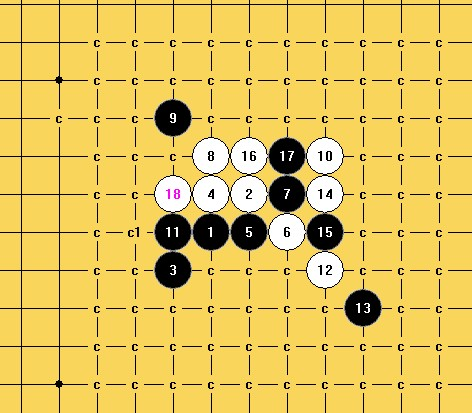
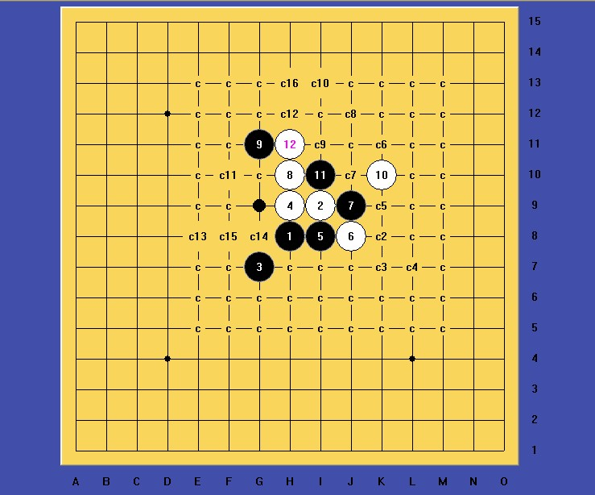
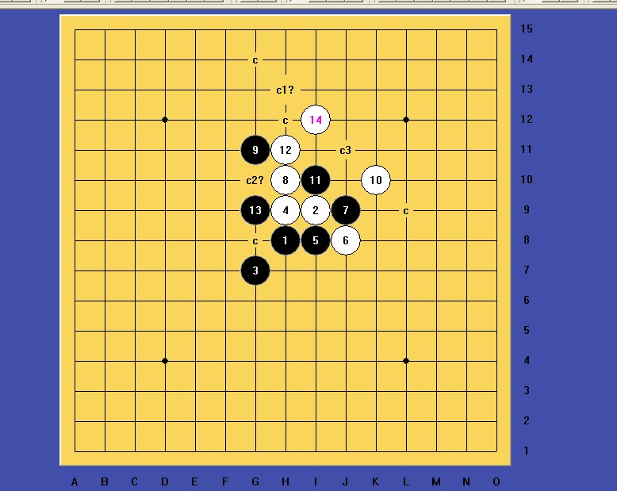
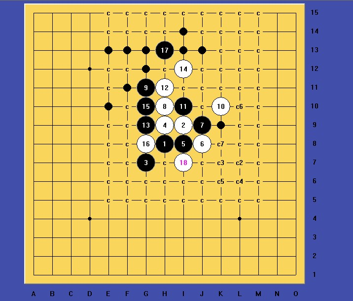

我的五子棋之旅
#1 我的五子棋之旅 作者：文英 发表时间：2012-3-18 2:45:53
还记得是04年的7月份 我开始接触五子棋当时只是随便瞎走，跟个无头的苍蝇一样乱走乱碰。 根本就是没脑子一样的玩棋。后来无意中进了禁一。记得一个叫天子的哥哥每天用好多号下棋 每个号都有一个家族 那时候的家族是没有像现在这么正规的。只是每个家族都会有个群 群的名字叫什么 进游戏名字前面就得加那群名。 这就叫做家族啦 ！那时候他还在上大学现在孩子估计都很大了吧 ！他用号下棋赢了分就分给我。我那时候只喜欢分。感觉分高就无敌了，好傻的想法~
根本就是没脑子一样的玩棋。后来无意中进了禁一。记得一个叫天子的哥哥每天用好多号下棋 每个号都有一个家族 那时候的家族是没有像现在这么正规的。只是每个家族都会有个群 群的名字叫什么 进游戏名字前面就得加那群名。 这就叫做家族啦 ！那时候他还在上大学现在孩子估计都很大了吧 ！他用号下棋赢了分就分给我。我那时候只喜欢分。感觉分高就无敌了，好傻的想法~ 因为那时候200分就刷不动了 根本没什么双倍积分，刷分软件 后来经过和他混了一段时间我的分已经变成了1425了9段了哈！！ 当时已经算很高分了 后来我就去高一玩了。到了高一我就觉得我的分不算什么。还记得有一个叫32号娶你的分数已经刷到2000多分了。牧童姐姐的师傅。最让我受不了的是 去了高一我认识了一个冤家 叫17男孩。跟个神经病是的整天就知道和人家要QB泡妞！后来，我们在棋室里见面就骂，骂他已经是属于打招呼了 ，嘻嘻根本不算是什么仇人。到了07年我就跑到了三手一，高手真的很多。不过我认识的都是一些用软件的。那时候还真不知道是用软件下棋。当时那个羡慕呀！后来我就认识一个叫罗生门@诺的｛喜欢听雨的诺｝看到他下棋我傻掉了怎么会那么厉害。我就想：我要是像他那么厉害该多好啊！后来他就用我的号开始下棋了。用我的号套别人好多谱。记得小刀姐过生日的时候，还用我的号和小刀姐下了60多局。那时候真的叫很疯狂。我以前也不乖。想法好单纯；；人家叫我骂谁我就骂谁~-~！后来还和女人水？酒吵了起来。还要和我现实见面我当时19岁了已经。我想见就见吧。我和我现实一个好朋友去了。约会地点是 福田小商品城。当时还问我带了几个人。真是一个字，汗。去了以后也没怎么样单独说了好多话 和好了 。可能看我还小吧不懂事 也就过去了 我还莫名其妙的看到远处他带了几个男人。当时也不害怕。哈 后来想想嘛 真够可笑的额！诺因为忙了也不上我号下棋了 我自己也不太会玩 。后来就不怎么进棋室了 一直工作了。到了10年的9月份，我因为工作无聊的原因。又开始进了棋室，，玩上了 五子棋 。那时候才知道花月是必胜的，，还当了一个人下花月的陪练 没把我累死。我就开始学习仅售规则了，在后来我一直被虐中 直到现在 我认识了很多棋友 百战一直陪我下了好久的棋。。也很开心每天一起下棋，因为不太喜欢看谱。。导致现在还是这么的菜。这时候的我已经不像以前那么不懂事，，不乱和人吵架了。。只想下好自己的棋 我最感谢的还是我的师父啦人虽然叫老色猪 整天泡妞，听说把以前的徒弟都给泡走了，不当他徒弟了。~-·但是我觉得嘛。。师父是一个嘴上流氓心里纯洁的师父
因为那时候200分就刷不动了 根本没什么双倍积分，刷分软件 后来经过和他混了一段时间我的分已经变成了1425了9段了哈！！ 当时已经算很高分了 后来我就去高一玩了。到了高一我就觉得我的分不算什么。还记得有一个叫32号娶你的分数已经刷到2000多分了。牧童姐姐的师傅。最让我受不了的是 去了高一我认识了一个冤家 叫17男孩。跟个神经病是的整天就知道和人家要QB泡妞！后来，我们在棋室里见面就骂，骂他已经是属于打招呼了 ，嘻嘻根本不算是什么仇人。到了07年我就跑到了三手一，高手真的很多。不过我认识的都是一些用软件的。那时候还真不知道是用软件下棋。当时那个羡慕呀！后来我就认识一个叫罗生门@诺的｛喜欢听雨的诺｝看到他下棋我傻掉了怎么会那么厉害。我就想：我要是像他那么厉害该多好啊！后来他就用我的号开始下棋了。用我的号套别人好多谱。记得小刀姐过生日的时候，还用我的号和小刀姐下了60多局。那时候真的叫很疯狂。我以前也不乖。想法好单纯；；人家叫我骂谁我就骂谁~-~！后来还和女人水？酒吵了起来。还要和我现实见面我当时19岁了已经。我想见就见吧。我和我现实一个好朋友去了。约会地点是 福田小商品城。当时还问我带了几个人。真是一个字，汗。去了以后也没怎么样单独说了好多话 和好了 。可能看我还小吧不懂事 也就过去了 我还莫名其妙的看到远处他带了几个男人。当时也不害怕。哈 后来想想嘛 真够可笑的额！诺因为忙了也不上我号下棋了 我自己也不太会玩 。后来就不怎么进棋室了 一直工作了。到了10年的9月份，我因为工作无聊的原因。又开始进了棋室，，玩上了 五子棋 。那时候才知道花月是必胜的，，还当了一个人下花月的陪练 没把我累死。我就开始学习仅售规则了，在后来我一直被虐中 直到现在 我认识了很多棋友 百战一直陪我下了好久的棋。。也很开心每天一起下棋，因为不太喜欢看谱。。导致现在还是这么的菜。这时候的我已经不像以前那么不懂事，，不乱和人吵架了。。只想下好自己的棋 我最感谢的还是我的师父啦人虽然叫老色猪 整天泡妞，听说把以前的徒弟都给泡走了，不当他徒弟了。~-·但是我觉得嘛。。师父是一个嘴上流氓心里纯洁的师父 其实师父小我一岁 我就把他当小孩 这小伙子有前途。下棋不错嘛。。。嘿嘿o(∩_∩)o
其实师父小我一岁 我就把他当小孩 这小伙子有前途。下棋不错嘛。。。嘿嘿o(∩_∩)o 进了炫飞我也挺开心的认识更多的棋友了~~其实大部分以前就认识(*^__^*) 嘻嘻 正式进炫飞一段时间感觉挺好滴~以后的日子还很长，我也领悟到了下棋其实算是在浪费生命吧 干什么不是浪费生命呢 怎么开心就去做自己喜欢的事情吧！但是 还是要克制一点的 毕竟现实失去了好多 ，，好多喜欢五子棋的人应该都和我有一样的感受吧 ｛我为棋狂｝把五子棋当成爱好不要太痴迷于他 ，，毕竟我们要活到现实里面去 。。好多现实的问题都要好好的去解决掉。。适可而止 。。。我写了这么多了 老大 多给我几个威望吧o(∩_∩)o
进了炫飞我也挺开心的认识更多的棋友了~~其实大部分以前就认识(*^__^*) 嘻嘻 正式进炫飞一段时间感觉挺好滴~以后的日子还很长，我也领悟到了下棋其实算是在浪费生命吧 干什么不是浪费生命呢 怎么开心就去做自己喜欢的事情吧！但是 还是要克制一点的 毕竟现实失去了好多 ，，好多喜欢五子棋的人应该都和我有一样的感受吧 ｛我为棋狂｝把五子棋当成爱好不要太痴迷于他 ，，毕竟我们要活到现实里面去 。。好多现实的问题都要好好的去解决掉。。适可而止 。。。我写了这么多了 老大 多给我几个威望吧o(∩_∩)o 

［ 冰雪笑醉 于 2012-3-18 6:53:30 时花20金币送鲜花一朵］
［ 冰雪笑醉 于 2012-3-18 6:53:36 时花20金币送鲜花一朵］
［ 冰雪笑醉 于 2012-3-18 6:53:37 时花20金币送鲜花一朵］
［ 冰雪笑醉 于 2012-3-18 6:53:39 时花20金币送鲜花一朵］
［ 有志青年 于 2012-3-18 9:06:01 时奖励此帖[金币加 100 威望加1］
［ 秋风雾语 于 2012-3-18 13:51:57 时花20金币送鲜花一朵］
［ 秋风雾语 于 2012-3-18 13:52:03 时花20金币送鲜花一朵］
［ 秋风雾语 于 2012-3-18 13:52:07 时花20金币送鲜花一朵］
［ 簡單 于 2012-3-18 19:07:39 时花20金币送鲜花一朵］
［ 簡單 于 2012-3-18 19:07:49 时花20金币送鲜花一朵］
［ 狼星 于 2012-3-18 19:47:15 时花20金币送鲜花一朵］
［ 狼星 于 2012-3-18 19:47:21 时花20金币送鲜花一朵］
［ 虎哥 于 2012-3-18 20:57:34 时花20金币送鲜花一朵］
#2 Re:我的五子棋之旅 作者：冰雪笑醉 发表时间：2012-3-18 6:55:36
 我的钱呀，我前段时间送花送的有点多，发现银行里的钱好少了哦。送出去的多，拿回来的少。
我的钱呀，我前段时间送花送的有点多，发现银行里的钱好少了哦。送出去的多，拿回来的少。
牧童是1家族的牧童吗？好象在禁一经常看到
鬼鬼你继续多写写哈。。 随便发发你的地毯谱啊。讲讲下棋对局啊
随便发发你的地毯谱啊。讲讲下棋对局啊
［ 过好今天 于 2012-3-19 8:59:57 时花20金币送鲜花一朵］
［ 过好今天 于 2012-3-19 9:02:13 时花20金币送鲜花一朵］
#3 Re:我的五子棋之旅 作者：虎哥 发表时间：2012-3-18 21:02:47
 感动得涕泪横流
感动得涕泪横流［ 过好今天 于 2012-3-19 8:58:06 时花20金币送鲜花一朵］
#4 Re:我的五子棋之旅 作者：小帮帮 发表时间：2012-3-18 21:31:24
都这么有才啊
#5 Re:我的五子棋之旅 作者：过好今天 发表时间：2012-3-19 8:57:21
你下这麽久 小鬼#6 Re:冰雪笑醉【==Re:我的五子棋之旅==】 作者：文英 发表时间：2012-3-19 14:43:22
活宝姐是禁一那个牧童，，牧童姐姐是看我成长的姐姐。。。
#7 关于斜月三打9的研究 作者：山城刀客 发表时间：2012-3-19 15:07:01
前段时间，我已经发帖子讨论过这个9，今天看到大家又在讨论，我就把自己研究的一些进展发出来和大家一起讨论。
10手必然

显然，只有两个11最强，C1点已经地毯，图如下：

 
这个18走后，白棋地毯，难度不是很大。
那么关于这个11我也进行了很长时间的拆解：

只有G9点目前没地毯出来，难度很大！

显然这个局面 非常的复杂。
继续拆解，毛毯如下 ：

拆到这里，已经是精疲力尽，我深感以自己的能力是无法地毯下去了，所以暂时放弃！！！这个13手后的变化太过复杂，难度太大了，今天贴出来和大家一起讨论！！！
#8 Re:我的五子棋之旅 作者：山城刀客 发表时间：2012-3-19 15:22:45
不好意思呀，刚才我是要单独发帖的，没想到成跟帖了，一时疏忽大意 ，嘿嘿！！！#9 Re:我的五子棋之旅 作者：三国老凯 发表时间：2012-3-19 15:23:38
 阅~~
阅~~
#10 Re:我的五子棋之旅 作者：嵯峨 发表时间：2012-3-24 17:03:14
 顶。。
顶。。